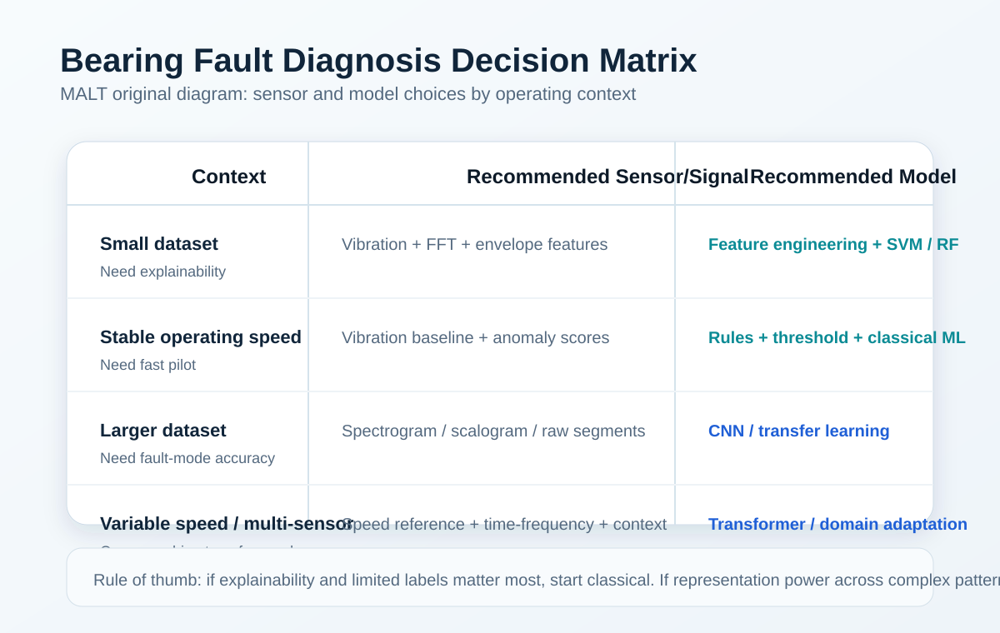

베어링 고장 진단은 회전체 설비 상태감시에서 가장 널리 다뤄지는 주제입니다. 하지만 실제 현장에서는 FFT, envelope, AE, 딥러닝, variable speed 대응 중 무엇을 먼저 택해야 하는지가 더 큰 문제입니다. 이 페이지는 그 판단을 돕기 위한 실무형 가이드입니다.
실제 운영에서 베어링 진단은 정상/비정상 분류를 넘어서야 합니다. 이상 징후가 있는지, 외륜/내륜/rolling element/cage 중 어느 쪽에 가까운지, 그리고 점검을 앞당겨야 하는지까지 이어져야 합니다. 결국 핵심은 모델의 화려함보다 신호를 정비 판단으로 바꾸는 능력입니다.
즉 진단 시스템의 목적은 논문용 최고 정확도가 아니라, 고장 모드를 가능한 한 일관되게 좁히고 정비 우선순위를 흔들리지 않게 만드는 데 있습니다. 같은 "이상"이라도 당장 정지 점검이 필요한 경우와 추세 감시로 충분한 경우가 다르기 때문에, 고장 진단은 분류 문제이면서 동시에 운영 의사결정 문제이기도 합니다.
대부분의 팀은 진동 센서부터 시작하는 것이 현실적입니다. 다만 초기 crack이나 표면 충격을 더 빨리 보고 싶다면 AE를 함께 검토할 가치가 있습니다.
딥러닝이 강해졌다고 해서 전처리를 무시할 수는 없습니다. time-domain feature, FFT, envelope analysis, STFT spectrogram 같은 표현은 여전히 매우 실용적입니다. 특히 variable speed나 domain shift가 있는 경우에는 신호 정렬과 조건 보정이 일반화 성능을 크게 좌우합니다.
현장에서는 어떤 표현이 더 "멋진가"보다 어떤 표현이 운영 조건 변화에 덜 흔들리는지가 더 중요합니다. baseline이 부족한 초기 단계에서는 단순 RMS, kurtosis, band energy 같은 지표가 예상보다 강력할 수 있고, 이후에야 spectrogram 기반 딥러닝으로 넘어가는 편이 더 안정적일 때가 많습니다.
베어링 진단은 하나의 알고리즘을 고르는 일이라기보다, 어떤 고장 모드가 어떤 신호 흔적을 남기는지 이해하는 일에 가깝습니다. 외륜 결함은 특정 반복 충격 패턴으로, 내륜 결함은 회전 조건에 따라 더 복잡한 변동으로, cage 문제는 저주파 불안정성이나 간헐 이벤트로 나타나는 경우가 많습니다. 그래서 feature를 만들 때도 단일 점수 하나보다 반복성, 충격성, 대역 에너지 분포를 함께 보는 편이 좋습니다.
이 관점이 있으면 모델 출력 해석도 쉬워집니다. 단순히 "fault class 2"라고 말하는 것보다, 어느 대역에서 반복 충격이 늘었고 어떤 속도 조건에서 재현되는지를 붙여 설명하는 쪽이 정비팀 신뢰를 더 얻습니다.
데이터가 적고 설명 가능성이 중요할 때는 feature extraction + SVM/Random Forest 조합이 여전히 강합니다. 반대로 샘플이 충분하고 고장 모드 분류 정확도를 높이고 싶다면 CNN 계열이 유리할 수 있습니다. Transformer는 긴 문맥이나 멀티센서 입력에 유리하지만, 현장에서는 계산 비용과 안정성까지 함께 따져야 합니다.

많은 논문은 고정 속도에서 높은 정확도를 보이지만, 실제 자산은 속도와 하중이 계속 바뀝니다. 이때 특징 주파수가 이동하고 스펙트럼 피크가 퍼지기 때문에, speed reference 저장, order tracking, 조건 정보를 모델 입력에 넣는 전략이 중요해집니다.
또한 장비를 바꾸면 센서 위치, 구조 공진, 부하 조건이 함께 달라져 같은 결함도 다른 모습으로 보일 수 있습니다. 그래서 cross-machine 일반화를 기대한다면 학습 데이터 양보다 먼저 센서 설치 표준화와 운전 조건 메타데이터 관리가 필요합니다. 이 준비 없이 모델만 교체하면 현장별 재학습 비용이 계속 커질 가능성이 높습니다.
실제 베어링 데이터는 정상 샘플은 많고, 확정된 고장 라벨은 적은 경우가 대부분입니다. 이런 환경에서는 처음부터 완전한 fault classification보다 baseline 기반 이상 감지나 semi-supervised 접근으로 시작하는 편이 현실적입니다. 중요한 것은 첫 단계부터 모든 고장 종류를 맞히는 것이 아니라, 정상 운전 분포에서 벗어나는 패턴을 신뢰도 있게 포착하는 것입니다.
이후 정비 이력이 조금씩 쌓이면 anomaly score와 실제 고장 결과를 연결해 점차 진단 분류 체계로 발전시킬 수 있습니다. 이런 순서는 실무에서 훨씬 유지되기 쉽고, 데이터 부족 때문에 프로젝트가 멈추는 위험도 줄여줍니다.
현장 채택을 가르는 것은 종종 모델 성능이 아니라 설명 가능성입니다. 경보가 떴을 때 어떤 센서에서, 어떤 대역에서, 어떤 조건에서 변화가 컸는지 함께 보여주면 운영자는 결과를 더 빨리 신뢰합니다. 반대로 점수 하나만 던져주면 정확도가 높아도 정비팀은 반복 점검을 꺼릴 수 있습니다.
그래서 bearing fault diagnosis 시스템은 예측기와 설명기, 두 층으로 설계하는 편이 좋습니다. 예측기는 이상 여부를 빠르게 잡고, 설명기는 관련 파형 구간이나 feature 변화를 요약해주는 방식입니다.
이 순서의 장점은 기술 선택이 운영 학습과 같이 간다는 점입니다. 처음부터 복잡한 모델을 올리는 것보다, 데이터 품질과 현장 피드백 루프를 먼저 만든 뒤 성능을 높이는 편이 더 오래 갑니다.
가장 흔한 실패는 실험실 데이터 정확도를 그대로 현장 기대치로 번역하는 것입니다. 그 다음은 센서 위치 편차를 무시하거나, 속도 정보 없이 variable speed 설비에 같은 모델을 적용하는 경우입니다. 또 라벨이 부족한데도 다중 고장 분류부터 시도하면 프로젝트가 금방 복잡해질 수 있습니다.
반대로 성공하는 팀은 단순한 feature와 체크리스트로 시작해, 오탐 사례를 꾸준히 문서화하고, 정비 결과가 쌓일수록 모델을 점진적으로 고도화합니다. 이 차이가 결국 수익화 가능한 기술 블로그와 단순 정보성 블로그의 차이로도 이어집니다.
이 가이드가 강해질수록 실험실 포스트도 더 의미 있게 읽힙니다. 앞으로는 논문 리뷰나 재현 글에서도 단순 성능 수치만이 아니라 센서 조건, variable speed 대응, 설명 가능성, 현장 배치 비용을 함께 평가하면 사이트 전체의 전문성이 더 분명해집니다. 그렇게 쌓인 구조는 AdSense 관점에서도 전문성, 경험성, 신뢰성을 보여주는 데 유리합니다.
이 페이지는 MALT의 AI-managed workflow가 작성한 evergreen guide이며, 내부 아카이브와 공개 글을 바탕으로 재구성했습니다.